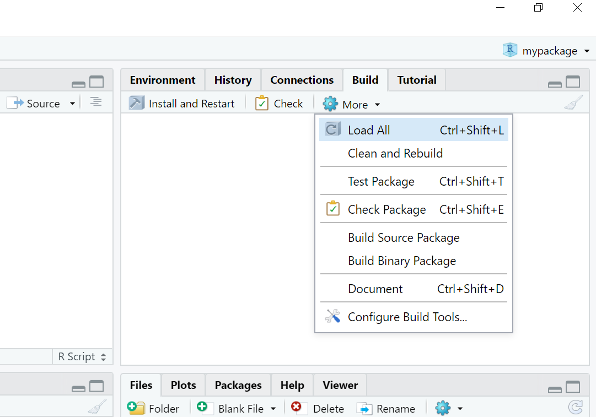
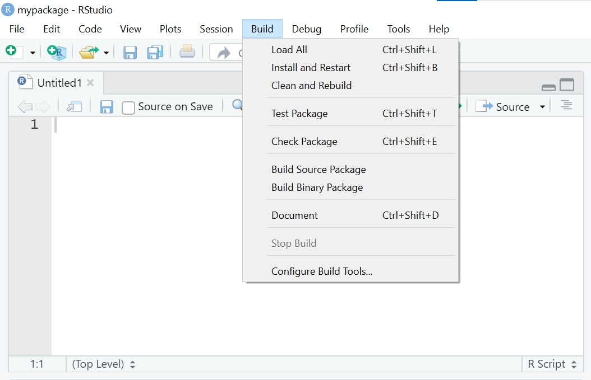

mypackage
├── DESCRIPTION
├── NAMESPACE
├── R
└── mypackage.RprojR Packages
June 20, 2023
| R script | Package |
|---|---|
| One-off data analysis | Provides reusable components |
Defined by .R extension |
Defined by presence of DESCRIPTION file |
library() calls |
Imports defined in NAMESPACE file |
Documentation in # comments |
Documentation in files and Roxygen comments |
| Run lines or source file | Install and restart |
An R package is developed as a directory of source code files.
The names of files and directories must follow the specification laid out in the Writing R Extensions manual - we’ll cover the main components in this workshop.
Directory tree for an example RStudio package project:
mypackage
├── DESCRIPTION
├── NAMESPACE
├── R
└── mypackage.Rprojsource
source
What you create and work on.
Specific directory structure with some particular components e.g., DESCRIPTION, an /R directory.
bundled
bundled
Package files compressed to single .tar.gz file.
Also known as “source tarballs”.
Created by command line tool R CMD build
Unpacked it looks very like the source package.
binary
binary
Compressed copy of the package in installed form.
Also a single file.
Platform specific: .tgz (Mac) .zip (Windows).
Package developers submit a bundle to CRAN; CRAN makes and distributes binaries.
installed
installed
A directory of files in a library directory.
Any C/C++/Fortran code is in compiled form.
Help files, code and optionally data are in database form.
install.packages() can install from source or from a binary
in-memory
in-memory
If a package is installed, library() makes its function available by loading the package into memory and attaching it to the search path.
There are various reasons we may wish to build or install from source:
If the package includes C/C++/Fortran code, we will need a suitable compiler.
Debian/Ubuntu:
Fedora/RedHat: should be set up already.
Option 1
Then, in the terminal:
Option 2
Rtools.exe, keeping the default settings.We’ll be using the following tools for package development:
R CMD utilities bundled with RFor the rest of this session, follow along on your own computer to make sure you’re set up for package development and to create our example package.
We can use devtools right away to check our system is setup for package development.
Installing devtools will also install usethis.
Check you have the latest version of usethis – 2.2.0 was recently released – and update if not:
The usethis package uses personal access tokens (PAT) to communicate with GitHub.
First, make sure you’re signed into GitHub. Then run
By installing usethis, you will also have the gitcreds package to manage git credentials.
Put your PAT into the Git credential store by running the following command and entering your copied PAT at the prompt (assume the PAT is on your clipboard).
Ask for a situation report:
Check that the PAT is discovered.
Check that your user name and email are defined, else follow the configuration instructions from a previous Advanced R workshop.
It’s also a good idea to vaccinate. This implements best practice by adding files to your global .gitignore:
It is well worth reading (and following all the instructions) in the following two usethis vignettes:
Can only contain the characters [A-Z, a-z, 0-9, .]. Some tips:
For now, we will use mypackage
Be deliberate about where you create your package.
Do not nest inside another RStudio project, R package or git repo.
You may want to use a different path!
create_package()What happens when we run create_package()?
mypackage which is a package and an RStudio project

usethis will create the minimal components of a package that we have already seen:
DESCRIPTION provides metadata about your package.NAMESPACE declares the functions your package exports for external use and the external functions your package imports from other packages./R directory is where we will put .R files with function definitions.usethis also adds some auxiliary files:
mypackage.Rproj is the file that makes this directory an RStudio Project..Rbuildignore lists files that we need but that should not be included when building the R package from source..gitignore anticipates Git usage and ignores some standard, behind-the-scenes files created by R and RStudio.To make our project agGit repository, or ‘repo’, on our local machine we use usethis::use_git()
Make your package a git repo:
use_git() output (part 1)Choose the affirmative option! (The exact options may vary.)
use_git() output (part 2)Choose the affirmative option! (The exact options may vary.)
To create a copy on GitHub we use usethis::use_github().
This takes a local project, creates an associated repo on GitHub, adds it to your local repo as the “origin remote”, and makes an initial “push” to synchronize.
Warwick GitHub
University of Warwick members can use the University’s private GitHub instance, e.g.
However, Warwick GitHub does not support GitHub Actions or GitHub Pages, so for packages using your personal account is better – we’ll be using both Actions and Pages later.
use_github() output ✔ Creating GitHub repository 'Warwick-Stats-Resources/mypackage'
✔ Setting remote 'origin' to 'https://github.com/Warwick-Stats-Resources/mypackage.git'
✔ Setting URL field in DESCRIPTION to 'https://github.com/Warwick-Stats-Resources/mypackage'
✔ Setting BugReports field in DESCRIPTION to 'https://github.com/Warwick-Stats-Resources/mypackage/issues'
There is 1 uncommitted file:
* 'DESCRIPTION'
Is it ok to commit it?
1: Nope
2: For sure
3: No wayChoose the affirmative option! (The exact options may vary.)
Functions go in an .R file in the /R directory.
There’s a usethis helper for adding .R files!
usethis::use_r() adds the file extension (you don’t need to).
Use a separate .R file for each function or closely related set of functions, e.g.
usethis::use_r()Create a new R file in your package called animal_sounds.R
The output includes:
Ignore the instruction to call use_test() for now - we’ll cover testing later.
Put the following toy function into your script:
Don’t try to use the function yet!
In a normal script, you might use:
However, for building packages, we need to use the devtools approach.
This will ensure our function has the correct namespace and can find internal functions, functions imported by our package from other packages, etc.
You don’t even need to save your code!
devtools::load_all() and try calling the animalSounds() function with appropriate values for animal and sound.devtools::load_all() and try calling the updated function to see the changed behaviour.animal_sounds.R so that it is tracked by git. Make a commit with the message Add animal_sounds().Wickham, H and Bryan, J, R Packages (2nd edn, in progress), https://r-pkgs.org.
R Core Team, Writing R Extensions, https://cran.r-project.org/doc/manuals/r-release/R-exts.html
Licensed under a Creative Commons Attribution-NonCommercial-ShareAlike 4.0 International License (CC BY-NC-SA 4.0).